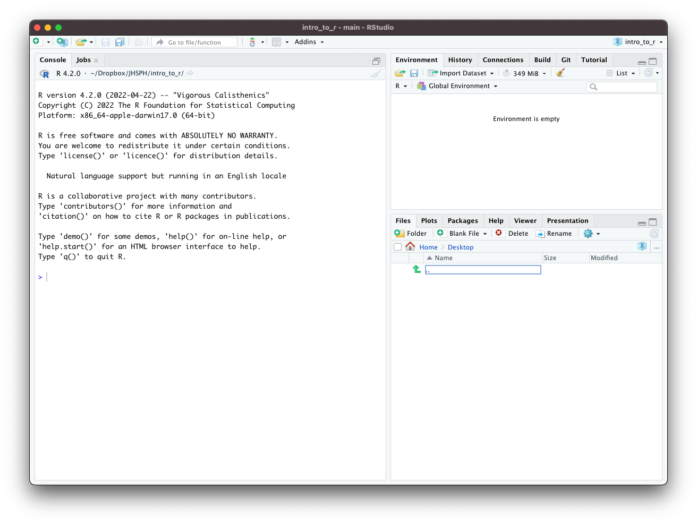
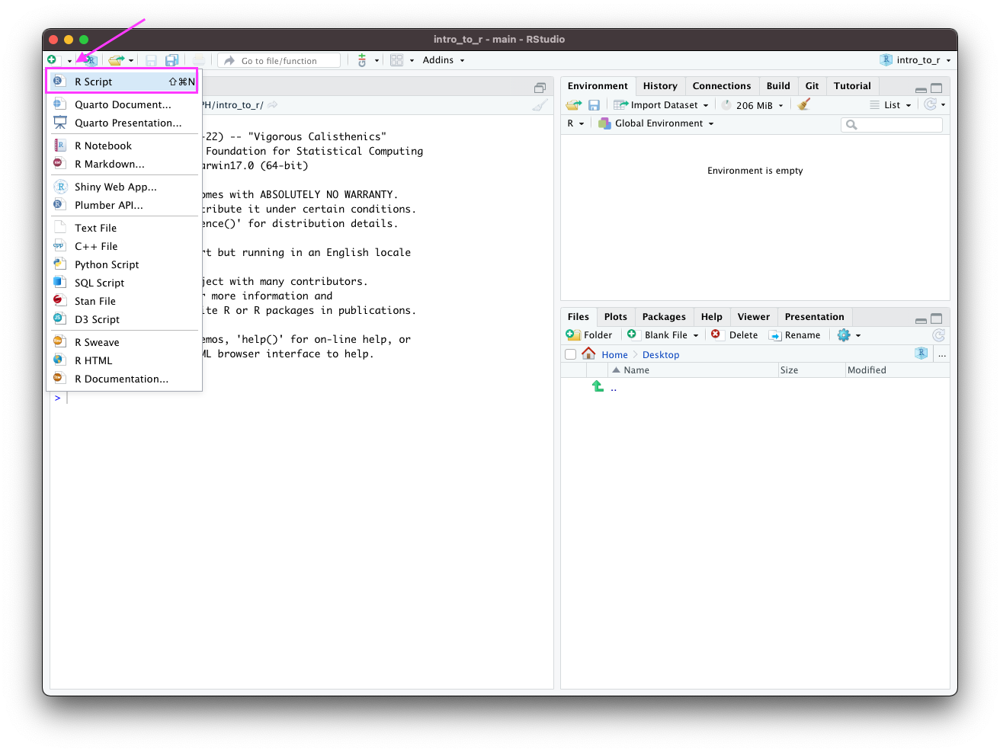
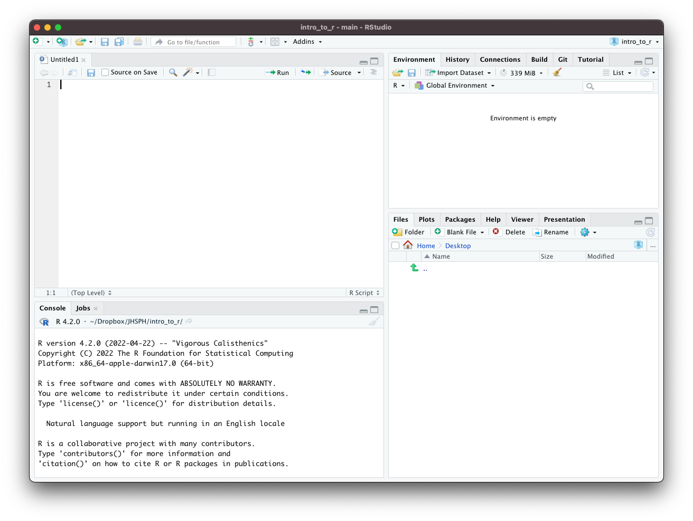

Install R and RStudio
R is a powerful analytical language and contains a number of useful packages for analyzing data.
RStudio is a free and open-source integrated development environment (IDE) for R. RStudio provides comprehensive facilities to R programmers and is highly recommended in this class.
Installing R
We recommend installing the most recent version or R – 4.2.3 as of March 18, 2023 If you have had installed R already some time ago, we recommend updating/reinstalling it to the most recent version. Use a link below to launch download of R installers (if the download does not start, a fix may be to copy-paste the below link to your browser):
For Mac users: https://cran.r-project.org/bin/macosx/
For Windows users: https://cran.r-project.org/bin/windows/base/R-4.2.3-win.exe
For Ubuntu users: https://cran.r-project.org/bin/linux/ubuntu/
For other operating systems, or if you prefer to access the download link from the official website, visit http://cran.us.r-project.org and select Download R for Linux, Download R for macOS or Download R for Windows based on which device you have.
Once the proper installation package has been selected, run the package and follow the on-screen directions. This installation includes the R language and a graphical user interface (GUI). Rather using the GUI, we recommend installing RStudio - an integrated development environment (IDE) that lets you interact with R with some added benefits.
Installing RStudio
To install RStudio, visit https://posit.co/download/rstudio-desktop/. Once on the website, select DOWNLOAD tab (upper left corner), scroll down and click Download under the RStudio Desktop – Free version (1st out of 4 columns), and select the proper installation file for your platform (Windows or Mac).
When you open up RStudio, it should look like this:

Click the top left button to create a new script:

RStudio, should now look like this:

There are four main windows.
The console is the lower-left window where you can run lines of code and see the output.
The script window is the upper-left window where you can edit and write scripts or markdown documents. From the script window, you can run the current line of code in your script (or multiple lines if you highlight multiple rows) by pressing
CMD+Returnon MacCTRL+Enteron Windows
The workspace is the upper-right window where you can manage your data and variables and see previous commands entered (under the history tab).
The plots window allows you to see the output of plots. On the other tabs, you can also look at directories, install packages, and look at help files for various
Rcommands.
You can customize the look of your RStudio IDE in Tools > Global Options....
R Packages
Packages are the fundamental units of reproducible R code. They are collections of R code that typically share some common purpose. Examples:
dplyr- package of functions for fast data set manipulation (subsetting, summarizing, rearranging, and joining together data sets);ggplot2- “R’s famous package for making beautiful graphics”; allows to build multiple-layers, highly customizable plots.
Installing and Loading R Packages
To install an
Rpackage, type in theRStudioconsoleinstall.packages("replace_with_package_name")and press enter to execute the command.
Once a package is installed, to use its contents in current
Rsession, we run in theRStudioconsole the commandlibrary(replace_with_package_name)
(Note the difference in presence of the quotation mark in the two above commands.)